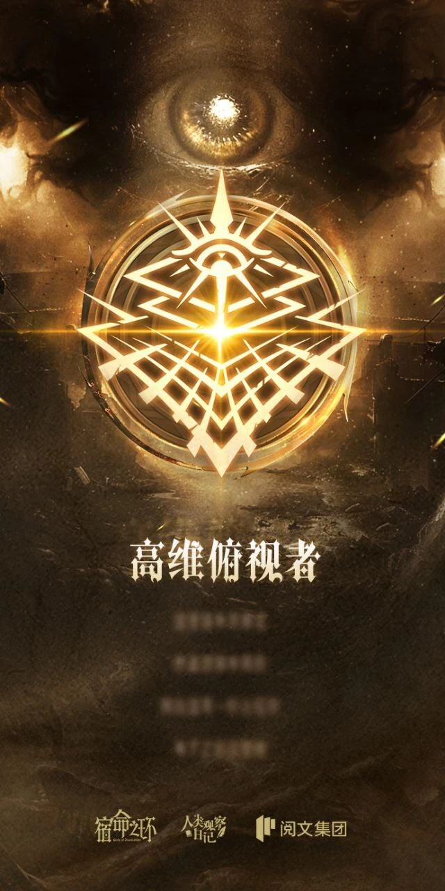

Overview
The High-Dimensional Overseer is one of the Outer Deities from the Cosmos that attempted to invade Earth. "He" is the current owner of the Sublunary Eye Pathway.
Honorific Name
The Lord of Dimensions; The Eye Overlooking the Mortal Realm; The Source of All Illusions; The Creator of the Painting World (维度之主， 俯视尘世的眼睛， 一切幻想的源头， 画中世界的造物主)
TRANSLATION NOTE The "Sublunary" (Chénshì) in "Sublunary Eye" (Chénshì zhī yǎn) is the same Chinese word as the "Mortal Realm" in "The Eye Overlooking the Mortal Realm" (Fǔshì chénshì de yǎnjīng)
A closer translation to "The Source of All Illusions" (一切幻想的源头) from the official Webnovel English translation is "The Source of All Fantasies" instead.
Symbols, Authorities & Abilities
TRANSLATION NOTE In the original Chinese text, 真理 (zhēnlǐ) and 真实 (zhēnshí) are distinct terms with different nuances, though both can be translated as “Truth” in English, as is done in the English WebNovel translation (School of Truth and the symbolism of Truth respectively). This note will illustrate the different meanings lost in translation.
- Chaos Mist's Truth (真理, zhēnlǐ):
- Universal Truth; It denotes a universal, objective, or philosophical truth that reflects the fundamental principles of reality, often absolute or unchanging.
- Sublunary Eye's Truth (真实, zhēnshí):
- Truth/Reality; It denotes factual existence, genuineness, or something that is not false or illusory, often concrete and verifiable.
"He" possesses full Authority over the Sublunary Eye and the corresponding Symbols, which include but are not limited to the following:
- Sublunary Eye: Authorities, and the Symbols of Dimensionality and Truth.1
The Symbols, Authorities, and Abilities "He" possesses and displays at the Above the Sequence level include:
- '''Dimensionality (
- "He" can counter abilities such as Parasitism, Marionettes, and Blink of the Lord of Mysteries.2
- From higher and lower Dimensions, Spirit Body Threads are tangible and real-something that could be touched. Blink only allowed movement on a small scale, while those Parasitized were bound together into one entity.
- "He" can swiftly ascend to the tenth Dimension to directly disrupt the internal connections of the aggregate forms of the Celestial Master and the Celestial Thearch.3Book 2, chapter 1168
- "He" can trap others into lower Dimensions.
- Under "His" gaze, the Celestial Master rapidly thinned, becoming a paper figurine and melding into the surrounding scenery as part of a Painting.1
- "He" can ascend Dimensions to instantly move away from the Galaxy "He" is currently in.9
Wéidù): As the Lord of Dimensions ( Wéidù zhī zhǔ), "He" can freely traverse through Higher and Lower Dimensions and affect the Dimensionality''' of other beings.2
- '''Truth (
- "He" is unaffected by the Calamity of Destruction's Fog of War.1Book 2, chapter 1166
- "He" is able to see through Deceit from a higher Dimension and locate the position of a transferred object.10
- "He" can see through the Truth, and discover the weaknesses within the states of existences.
- "He" saw the weaknesses within the aggregate forms of the Celestial Master and the Celestial Thearch from a Higher Dimension.3
- This is an ability of the Fantasy Pathway.11
Zhēnshí): "He" wields the symbolism of Truth''', being able to see the true state of things and through obstructions.
- '''The Creator of the Painting World (
- "He" can unfurl the illusory, coiled Strings around "Him" to form a Dimensional Painting that's filled with suns, planets, and a variety of rules and principles.3
- By setting the exit in a concealed location, this can trap both the Celestial Master and the Celestial Thearch for some time.3
- Beings in Higher Dimensions or within "His" Dimensional Painting will not be fully consumed by the explosion of Desires from the Father of Devils, "They" would only enter a brief state of stagnation.12
- Within "His" Paintings, "He" is Omnipotent and Omniscient.13
- The maximum possible power level of a creature created or summoned by "His" abilities is close to Sequence 0.14
Huà zhōng shìjiè de zàowùzhǔ)''':
Countering Symbols, Authorities & Abilities
Certain Symbols, Authorities, and Abilities of other Great Old Ones can counter some of "His" powers, which include but are not limited to the following:
- Lord of Mysteries:
- Change and Dimensionality in one-on-one scenario mutually counteracts each other.
- King of Space-Time could hinder the Lord of Dimensions from freely traversing dimensions.
- Demon of Knowledge:
- Information is widespread and all-encompassing in hierarchy. It is not restricted by lower Dimensions. Humans are conglomerations of Information, and Paintings are as well.1
- The Celestial Master turned incorporeal, transforming into a torrent of complex and massive Information to break free of the confines of the High-Dimensional Overseer's Painting.1
- However, when the High-Dimensional Overseer escaped to the highest dimension, the Celestial Master could only have minimal influence on this domain.4Book 2, chapter 1176
- The Anarchy / Son of Chaos:
- The Celestial Thearch can order all Dimensions — higher, lower, and the current one — to become interconnected, as though overlaid with layer upon layer of glass barriers.
- As a result, the High-Dimensional Overseer could no longer increase dimensions unscathed, nor could the Celestial Thearch's dimensions be lowered without maintaining "His" influence on the battlefield.
- However, when the High-Dimensional Overseer escaped to the highest dimension, the Celestial Thearch could only have minimal influence on this domain.4
- Eternal Darkness:
- Pallor, which restrains colors, would have a strong restraining effect against the Painting World.15
Appearance
True Form: An untouchable shadow from a higher dimension. Has a pair of indifferent, clear, and emotionless eyes, as if containing the entire universe.16 17
Background
According to the Seven Lights, ever since the Oldest One awakened and split apart, the most powerful Outer Deities in the entire universe, including the High-Dimensional Overseer, gathered around this tiny solar system.
Some of "Them" wish to retrieve "Their" Sefirot and Beyonder Characteristics that had been ripped from "Them", and were attracted here. Some of "Them" have the hope of getting neighboring Sefirot and high-level characteristics which "They" can accommodate.18
High-Dimensional Overseer desired Sefirot related to rules, order, and space-time. Through divination and prophecy, Klein deduced that "He" sought either the Nation of Disorder or the River of Eternal Darkness. If the Great Old Dominators concentrated "Their" efforts on pressing the Lord of Mysteries back into "His" coffin, the High-Dimensional Overseer would also likely seek to accommodate the the Uniqueness of Door and the Uniqueness of Error, and take control of Sefirah Castle.2Book 2, chapter 1164
History
As of 1358 of the Fifth Epoch, the High-Dimensional Overseer and "His" followers had been relatively passive, avoiding bloodshed and not frequently engaging in sacrificial rituals. Even if they did, it was usually confined to themselves and those in their immediate vicinity, minimizing the danger.5Book 2, chapter 448
However, they were not as ‘harmless’ as previously believed and the threat they posed was revealed when The Hostel, a ritual conducted using powers of the Sublunary Eye Pathway, commenced.5
During Project Vortex, the medium via which the Outer Deities' power breached the barrier, the Endless Cosmos oil painting, was created by Sage as per the wishes of the High-Dimensional Overseer.19
During The Apocalypse, "He" fought against the quasi-Great Old Ones from Earth, mainly the Celestial Master and the Celestial Thearch.
Trivia
- Termiboros once claimed to have knowledge about this Outer Deity but refused to elaborate further.5
- The High-Dimensional Overseer and Monarch of Decay can devour each other; If one of "Them" succeeds and further accommodates the Uniqueness of Door, "They" can attain the King of Space-Time symbolism.20
Translations
| Language | Name |
|---|---|
| Chinese | 高维俯视者 |
| Thai | ผู้ทอดมมองจากเบื้องบน |
References
- Book 2, chapter 1166.
- Book 2, chapter 1164.
- Book 2, chapter 1168.
- Book 2, chapter 1176.
- Book 2, chapter 448.
- Book 2, chapter 1166.
- Author's WeChat post hdo, part 1.
- Author's WeChat post mod, part 33.
- Book 2, chapter 1174.
- Book 2, chapter 1162.
- Author's WeChat post fool_authorities, Screenshot.
- Book 2, chapter 1169.
- Author's WeChat post death_rituals, part 27.
- Author's WeChat post coi, part 12.
- Author's WeChat post sun_abilities, part 8.
- Book 2, chapter 1164.
- Book 2, chapter 1166.
- Book 1, chapter 1271.
- Book 2, chapter 866.
- Author's WeChat post door_formulas, part 1.
Source
Article adapted from the High-Dimensional Overseer article on the Lord of the Mysteries Fandom wiki (CC BY-SA). Chapter numbers follow that article's citation format.
Image gallery
